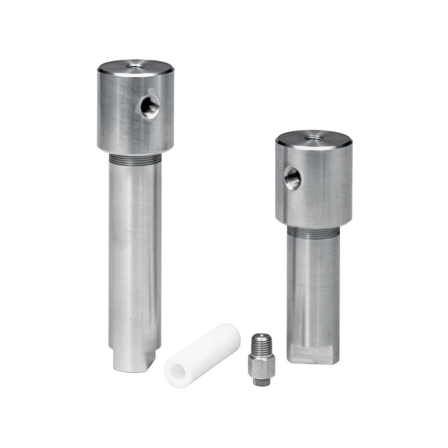
Fisher 252 Filter
Phụ kiện regulator Fisher 252 Filter. The Type 252 filter cleans supply gas or air. An extended version offers a larger drip chamber. Materials…
Pilot, bộ lọc, đồng hồ và phụ kiện cho regulator Fisher: 61, 6350/6360, P590, J500, 252 filter.
Fast Group cung cấp pilot & phụ kiện regulator Fisher chính hãng, đủ CO/CQ. Mỗi model có trang riêng với mô tả, biến thể, tài liệu kỹ thuật và hướng dẫn gửi RFQ.

Phụ kiện regulator Fisher 252 Filter. The Type 252 filter cleans supply gas or air. An extended version offers a larger drip chamber. Materials…
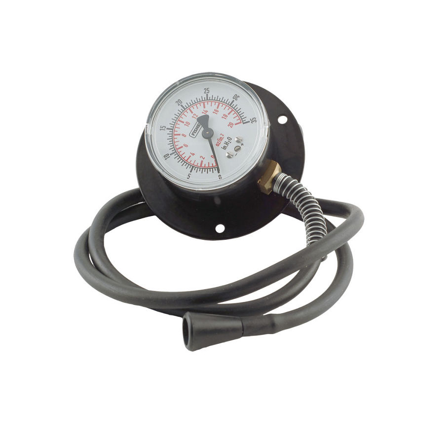
Phụ kiện regulator Fisher 50. 50 Series gauges handle many pressure measurements. They use ABS cases. The 50P‑2 uses a hose instead of an…
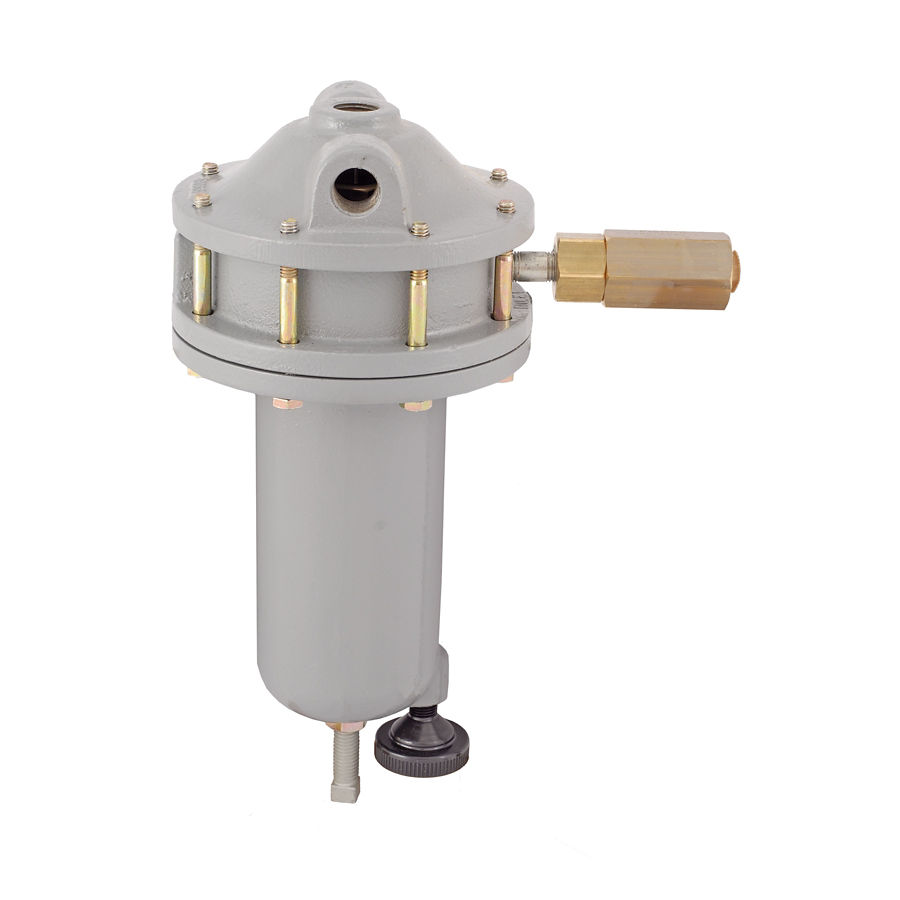
Phụ kiện regulator Fisher 61. 61 Series pilots pair with various regulators. They come in multiple pressure styles and reduce inlet…
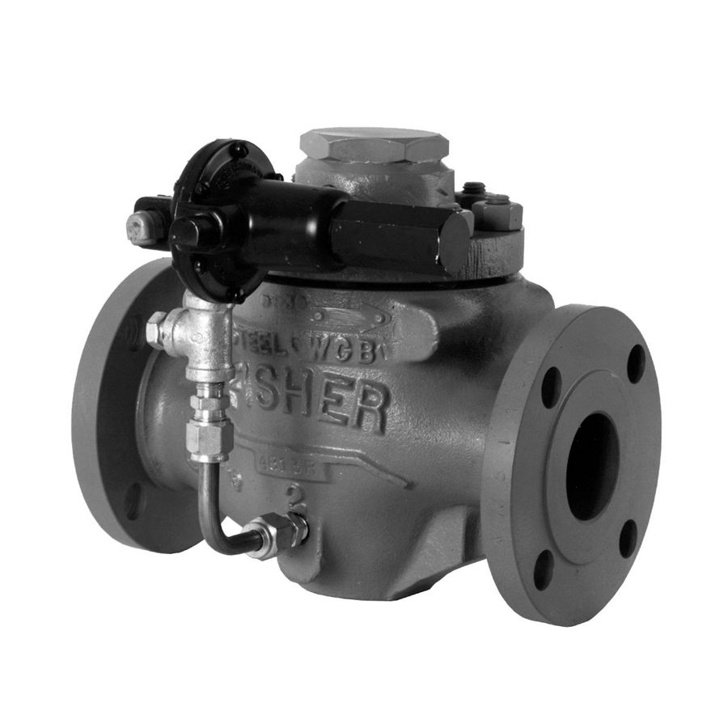
Phụ kiện regulator Fisher 6350/6360. 6350 and 6360 pilots work with various main valves. They handle gas service, and all but Type 6351 also…
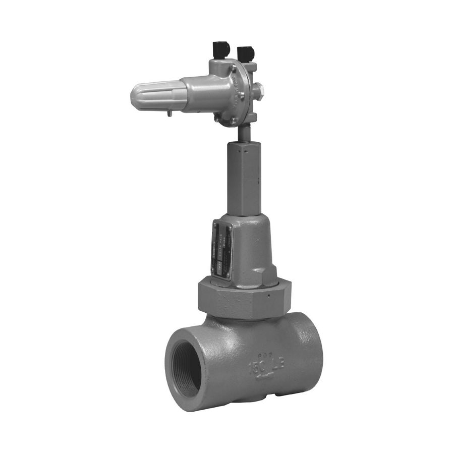
Phụ kiện regulator Fisher 6365/6358. 6365 and 6358 pilots work with various main valves. They serve pressure relief and backpressure use. They…
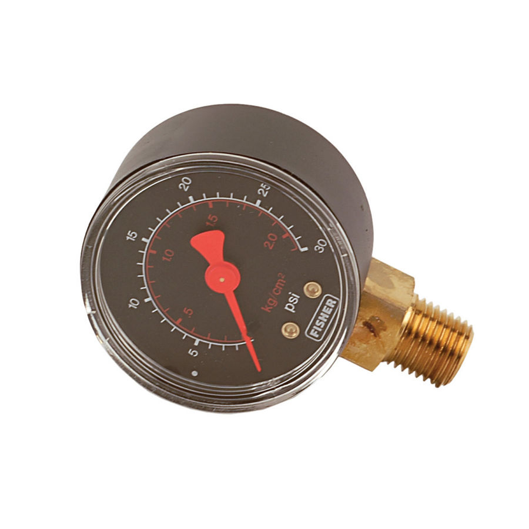
Phụ kiện regulator Fisher J500. Emerson Process Management offers pressure gauges with bottom, back, or top connection for LP-Gas service.…
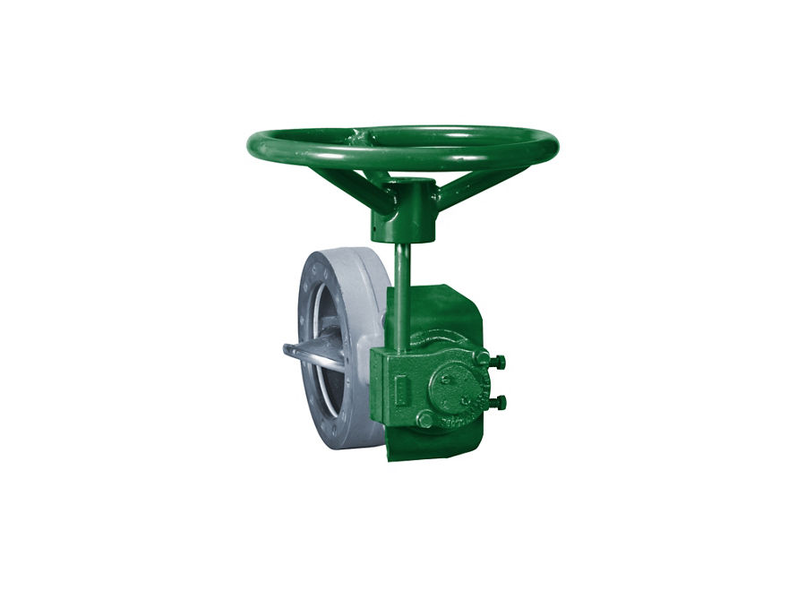
Phụ kiện regulator Fisher M Series. The actuator pilot shall open or close the controlled system via an external control signal. Explore more…
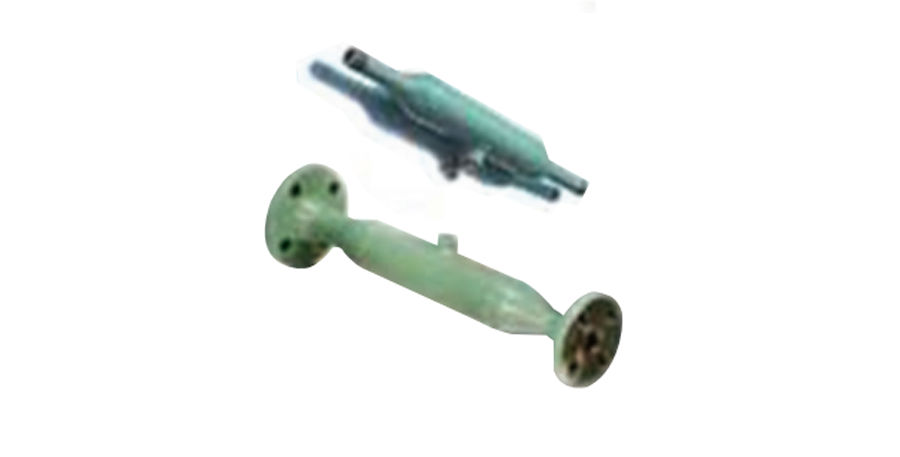
Phụ kiện regulator Fisher Muffling Orifice. Muffling Orifice reduces the generation of pressure regulator noise at its source. It provides an economical…
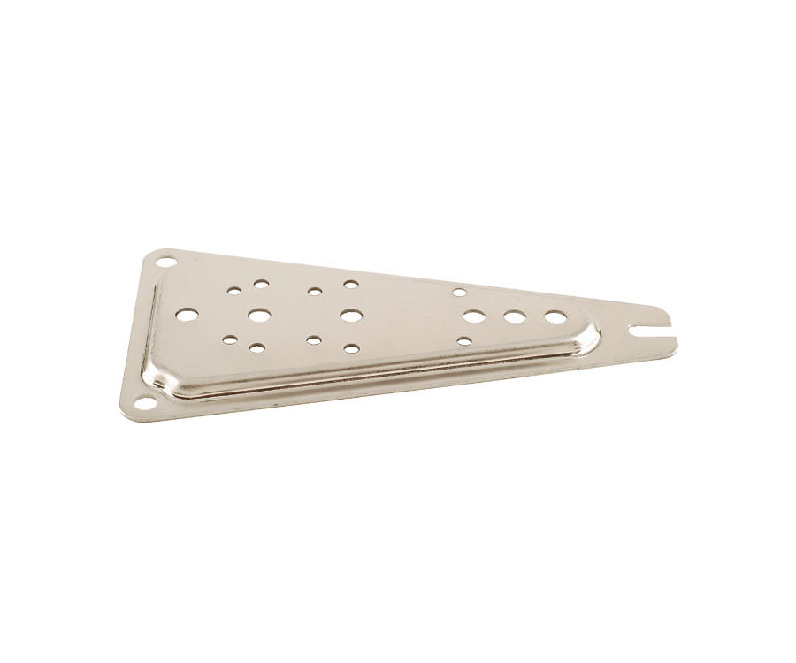
Phụ kiện regulator Fisher P100A-P102A-P100C. P100A, P102A, and P100C brackets securely mount regulators to containers or building structures.
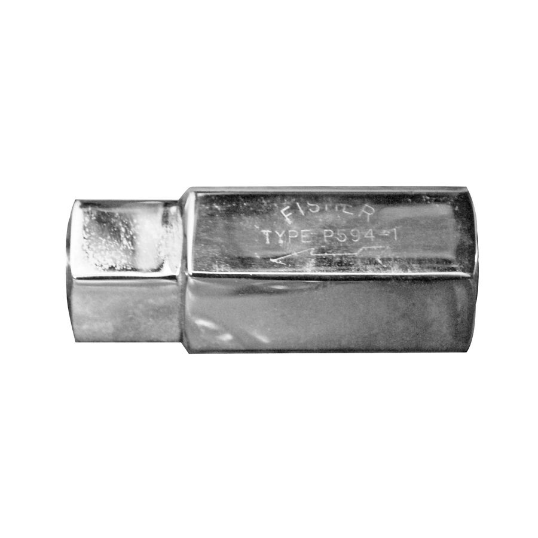
Phụ kiện regulator Fisher P590. P590 filters remove solids from gases before pilot lines. Aluminum or brass bodies; P593‑1 offers NACE.
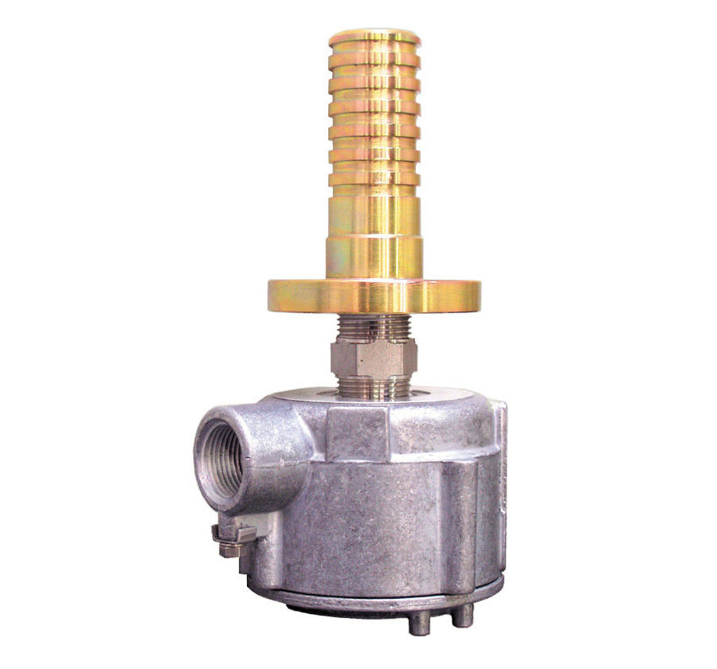
Phụ kiện regulator Fisher RPE. Type RPE reheats gas for regulator pilots to prevent freezing during pressure drops. It is available in two…
Trụ sở TP. Hồ Chí Minh và văn phòng Vũng Tàu đều tiếp nhận RFQ, tư vấn cấu hình và bàn giao bộ chứng từ CO/CQ; bảo hành chính hãng 12 tháng kể từ ngày giao hàng. Yêu cầu gửi trong giờ làm việc được phản hồi trong cùng ngày; giao hàng toàn quốc.
150/41 Nguyễn Cư Trinh, P. Cầu Ông Lãnh
51 Lê Văn Lộc, P. Vũng Tàu